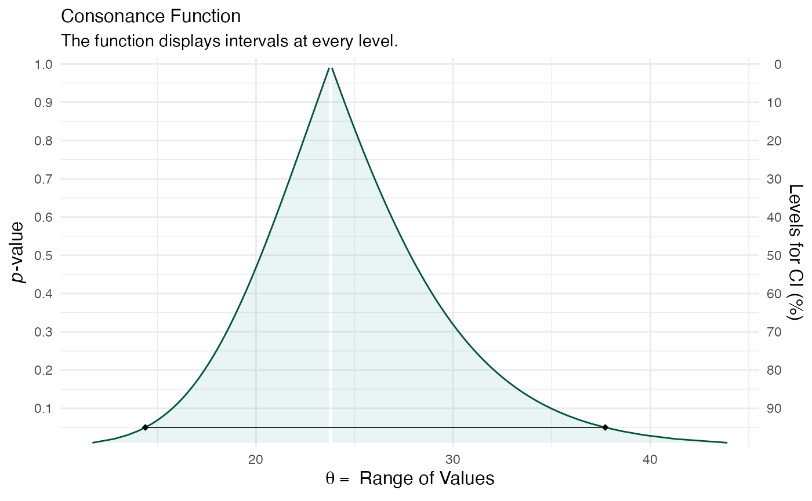
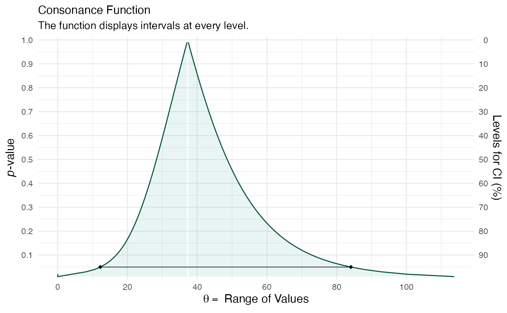
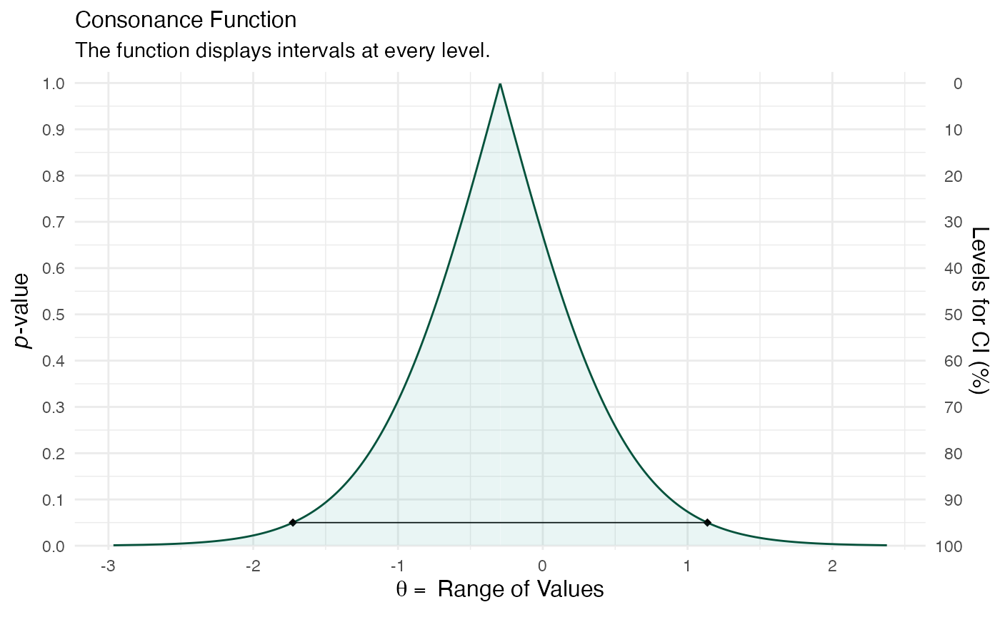

vignettes/variancecomponents.Rmd
variancecomponents.RmdHere is a simple example taken from the lme4
documentation.
(confint.merMod(fm1 <- lmer(Reaction ~ Days + (Days | Subject), data = sleepstudy, REML = TRUE)))
#> Computing profile confidence intervals ...
#> 2.5 % 97.5 %
#> .sig01 14.3814729 37.715993
#> .sig02 -0.4815007 0.684986
#> .sig03 3.8011645 8.753386
#> .sigma 22.8982669 28.857997
#> (Intercept) 237.6806955 265.129515
#> Days 7.3586533 13.575919There’s our output. Now suppose that we wanted the to see the
interval estimates and functions of the variable “Days”, here’s how we
would do it with curve_lmer(). We use
suppressMessages() to avoid seeing the long list of
profiling messages.
library(concurve)
object1 <- suppressMessages(curve_lmer(object = fm1, parm = "Days", method = "profile", steps = 100))
sample1 <- suppressMessages(curve_lmer(object = fm1, parm = ".sig01", method = "profile", steps = 100))
ggcurve(data = sample1[[1]], type = "c", measure = "default")
#> Warning: Using `size` aesthetic for lines was deprecated in ggplot2 3.4.0.
#> ℹ Please use `linewidth` instead.
#> ℹ The deprecated feature was likely used in the concurve package.
#> Please report the issue at <https://github.com/zadrafi/concurve/issues>.
#> This warning is displayed once per session.
#> Call `lifecycle::last_lifecycle_warnings()` to see where this warning was
#> generated.
Suppose we wanted to study the sources of variability in an experiment, which could be used for descriptive purposes or to better understand the sources so that they could be reduced in future experiment. This is vital in areas like industrial quality control because if one cannot take accurate measurements, then they have no hope of improving quality control.
Here we look at an example presented by John Lawson presented by Davies (1949).
A dye manufacturer wanted to know if there was an appreciable contribution to variability in dyestuff color yields owing to the quality of the intermediate acid batch used. It was a two- step process. Intermediate acid batches were produced in one step, and in a later step the acid was used to produce the dyestuff. The goal was to keep dyestuff color yields consistently high. If the majority of variation was caused by differences among the intermediate acid batches, then improvement efforts should be concentrated on the process that makes the acid batches. If the majority of variation was within preparations of the dyestuff made from the same acid batch, improvement efforts should be focused on the process step of making the dyestuff. A sampling experiment was run wherein six representative samples of H acid intermediate were taken from the step manufacturing process that produces it. From each acid sample, five preparations of the dyestuff Naphthalene 12B were made in a laboratory, and these were representative of the preparations that could be made with each sample. The data from the sampling experiment is shown in Table 5.2. The yields are given in grams of standard color.
We wish to estimate the variance components from the collected data above. A typical approach to estimate the variance components is to use analysis of variance (first proposed by Fisher), which uses the method of moments. However, in certain scenarios, this method is not desirable, and the restricted maximum likelihood approach (REML) is preferable.
Here we show how to do that.
fm1M <- lmer(yield ~ 1 + (1 | sample), data = Naph, REML = TRUE)
summary(fm1M)
#> Linear mixed model fit by REML ['lmerMod']
#> Formula: yield ~ 1 + (1 | sample)
#> Data: Naph
#>
#> REML criterion at convergence: 319.7
#>
#> Scaled residuals:
#> Min 1Q Median 3Q Max
#> -1.4117 -0.7634 0.1418 0.7792 1.8296
#>
#> Random effects:
#> Groups Name Variance Std.Dev.
#> sample (Intercept) 1764 42.00
#> Residual 2451 49.51
#> Number of obs: 30, groups: sample, 6
#>
#> Fixed effects:
#> Estimate Std. Error t value
#> (Intercept) 1527.50 19.38 78.8Now we attempt to estimate the interval estimates for variance components.
sample2 <- suppressMessages(curve_lmer(object = fm1M, parm = ".sig01", method = "profile", steps = 100))
ggcurve(data = sample2[[1]], type = "c", measure = "default")
You can also embed plots, for example:
c1 <- c(.5, -.5)
mod4 <- lmer(pl ~ 1 + Group + (1 | Subject:Group) + Period + Treat, contrasts = list(Group = c1, Period = c1, Treat = c1), data = antifungal)
summary(mod4)
#> Linear mixed model fit by REML ['lmerMod']
#> Formula: pl ~ 1 + Group + (1 | Subject:Group) + Period + Treat
#> Data: antifungal
#>
#> REML criterion at convergence: 148.2
#>
#> Scaled residuals:
#> Min 1Q Median 3Q Max
#> -2.0564 -0.3291 -0.1490 0.5399 1.7021
#>
#> Random effects:
#> Groups Name Variance Std.Dev.
#> Subject:Group (Intercept) 1.508 1.228
#> Residual 4.563 2.136
#> Number of obs: 34, groups: Subject:Group, 17
#>
#> Fixed effects:
#> Estimate Std. Error t value
#> (Intercept) 13.1687 0.4729 27.845
#> Group1 0.3375 0.9459 0.357
#> Period1 -0.2944 0.7340 -0.401
#> Treat1 0.5944 0.7340 0.810
#>
#> Correlation of Fixed Effects:
#> (Intr) Group1 Perid1
#> Group1 0.059
#> Period1 0.000 0.000
#> Treat1 0.000 0.000 0.059
crossed <- suppressMessages(curve_lmer(object = mod4, parm = "Period1", method = "profile"))
ggcurve(data = crossed[[1]], type = "c")
Note that the echo = FALSE parameter was added to the
code chunk to prevent printing of the R code that generated the
plot.
#> R version 4.5.2 (2025-10-31)
#> Platform: aarch64-apple-darwin20
#> Running under: macOS Tahoe 26.3
#>
#> Matrix products: default
#> BLAS: /System/Library/Frameworks/Accelerate.framework/Versions/A/Frameworks/vecLib.framework/Versions/A/libBLAS.dylib
#> LAPACK: /Library/Frameworks/R.framework/Versions/4.5-arm64/Resources/lib/libRlapack.dylib; LAPACK version 3.12.1
#>
#> locale:
#> [1] en_US.UTF-8/en_US.UTF-8/en_US.UTF-8/C/en_US.UTF-8/en_US.UTF-8
#>
#> time zone: America/New_York
#> tzcode source: internal
#>
#> attached base packages:
#> [1] stats graphics grDevices utils datasets methods base
#>
#> other attached packages:
#> [1] daewr_1.2-11 lme4_1.1-38 Matrix_1.7-4 concurve_3.0.0
#>
#> loaded via a namespace (and not attached):
#> [1] tidyselect_1.2.1 dplyr_1.2.0 farver_2.1.2
#> [4] S7_0.2.1 fastmap_1.2.0 fontquiver_0.2.1
#> [7] mathjaxr_2.0-0 digest_0.6.39 lifecycle_1.0.5
#> [10] survival_3.8-6 magrittr_2.0.4 compiler_4.5.2
#> [13] rlang_1.1.7 sass_0.4.10 tools_4.5.2
#> [16] yaml_2.3.12 data.table_1.18.2.1 knitr_1.51
#> [19] ggsignif_0.6.4 askpass_1.2.1 htmlwidgets_1.6.4
#> [22] xml2_1.5.2 RColorBrewer_1.1-3 abind_1.4-8
#> [25] withr_3.0.2 numDeriv_2016.8-1.1 purrr_1.2.1
#> [28] desc_1.4.3 bcaboot_0.2-3 grid_4.5.2
#> [31] ggpubr_0.6.2 gdtools_0.5.0 xtable_1.8-4
#> [34] colorspace_2.1-2 ggplot2_4.0.2 scales_1.4.0
#> [37] MASS_7.3-65 dichromat_2.0-0.1 cli_3.6.5
#> [40] rmarkdown_2.30 metafor_4.8-0 reformulas_0.4.4
#> [43] ragg_1.5.0 generics_0.1.4 otel_0.2.0
#> [46] rstudioapi_0.18.0 km.ci_0.5-6 survminer_0.5.1
#> [49] minqa_1.2.8 cachem_1.1.0 splines_4.5.2
#> [52] metadat_1.4-0 parallel_4.5.2 survMisc_0.5.6
#> [55] vctrs_0.7.1 boot_1.3-32 jsonlite_2.0.0
#> [58] fontBitstreamVera_0.1.1 carData_3.0-6 car_3.1-5
#> [61] patchwork_1.3.2 rstatix_0.7.3 Formula_1.2-5
#> [64] pbmcapply_1.5.1 systemfonts_1.3.1 tidyr_1.3.2
#> [67] jquerylib_0.1.4 glue_1.8.0 nloptr_2.2.1
#> [70] pkgdown_2.2.0 flextable_0.9.11 gtable_0.3.6
#> [73] tibble_3.3.1 pillar_1.11.1 htmltools_0.5.9
#> [76] openssl_2.3.4 ProfileLikelihood_1.3 R6_2.6.1
#> [79] KMsurv_0.1-6 Rdpack_2.6.6 textshaping_1.0.4
#> [82] evaluate_1.0.5 lattice_0.22-9 rbibutils_2.4.1
#> [85] backports_1.5.0 broom_1.0.12 fontLiberation_0.1.0
#> [88] bslib_0.10.0 Rcpp_1.1.1 zip_2.3.3
#> [91] uuid_1.2-2 gridExtra_2.3 nlme_3.1-168
#> [94] officer_0.7.3 xfun_0.56 fs_1.6.6
#> [97] zoo_1.8-15 pkgconfig_2.0.3